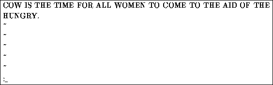

To quit vi without making changes to the file, use the command :q!. When you type the ``:'', the cursor will move to the last line on the screen; you'll be in last line mode.

In last line mode, certain extended commands are available. One of them
is q!, which quits vi without saving. The command :wq
saves the file and then exits vi. The command ZZ (from
command mode, without the ``:'') is equivalent to :wq.
Remember that you must press  after a command entered
in last line mode.
after a command entered
in last line mode.
To save the file without quitting vi, just use :w.